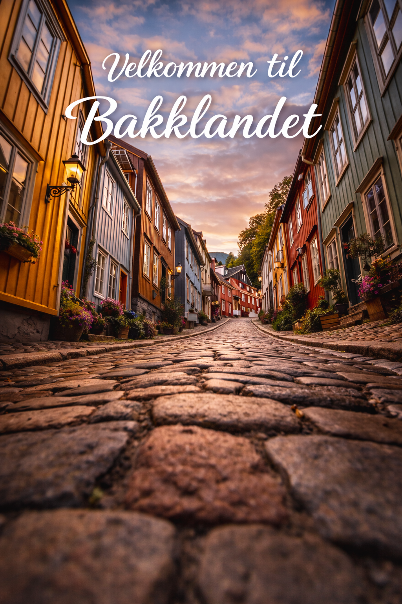

Trondheim - Norges egentlige hovedstad


Enhver nordmann (og turist) burde besøke Trondheim:
Den historisk viktige byen som ligger plassert midt i landet, har vært viktig for alt som har skjedd i Norge siden istiden.
5 gode grunner til å besøke Trondheim:
- Nidarosdomen
- NTNU
- Gløshaugen
- Kalvskinnet
- Dragvoll
- Bakklandet
- NKUL
- Malvik
Nyttige lenker